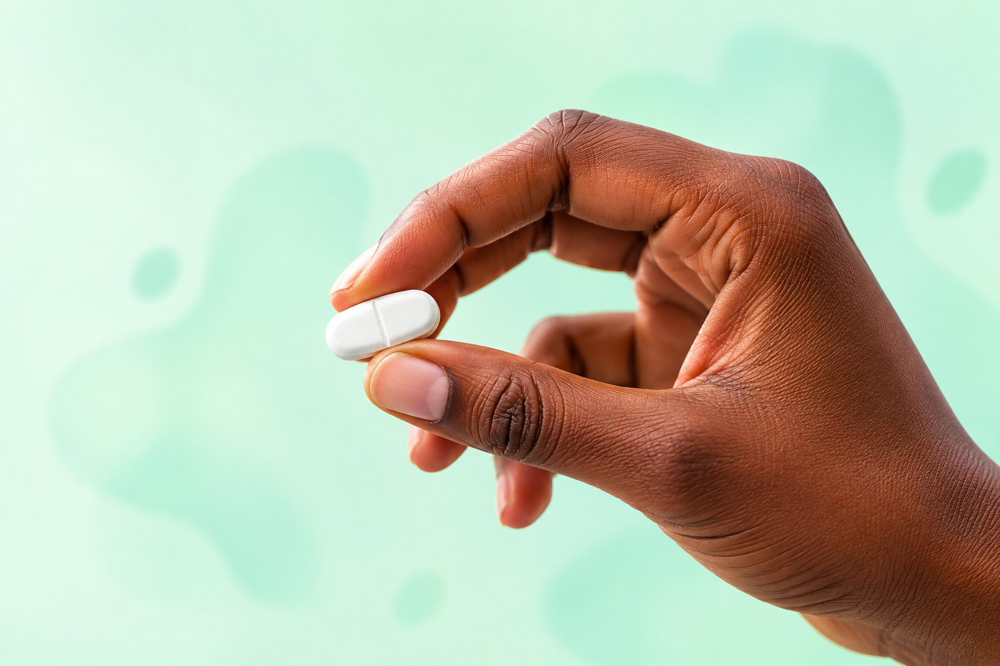

Viral suppression
ARV can lower the amount of HIV in your body to very low levels, helping you stay healthy.
Your treatment, your future
Taking your HIV medicine as prescribed is one of the most powerful things you can do for your health. One pill, one routine, one step at a time.
See the benefits
Every dose counts
ARV works best when it is taken consistently, exactly as your healthcare provider recommends.
ARV can lower the amount of HIV in your body to very low levels, helping you stay healthy.
Consistent treatment helps protect your immune system and reduce the risk of illness.
Taking doses as prescribed helps your medication keep working effectively.
More energy, fewer worries and more moments that matter to you.
Small steps, big impact
Everyone’s routine is different. Try a few practical tools and keep the ones that fit your life.
Choose a regular time. Link your medicine to something you already do each day, like breakfast or brushing your teeth.
Use a reminder. Set an alarm, calendar alert or pill box so your next dose is easy to remember.
Ask for support. Your healthcare team can help with side effects, refills or anything making treatment difficult.